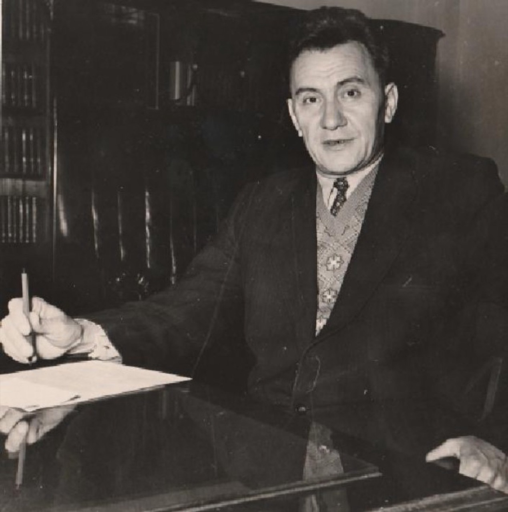

ЖЕКЕ ІС
Мұрағаттық карточка · цифрлық көшірмеЦИФРЛЫҚ
МҰРАҒАТ
№ 1912
МҰРАҒАТ
№ 1912

- Аты-жөні
- Қонаев Дінмұхамед Ахметұлы
- Туған
- 12.01.1912, Верный
- Лауазымы
- Қазақстан КП ОК бірінші хатшысы, 1960–1986
- Наградасы
- Социалистік Еңбек Ері — үш рет
- Қайтыс болды
- 22.08.1993, Алматы
Карточка көпшілікке арналған дереккөздер негізінде цифрлық түрде құрастырылды.